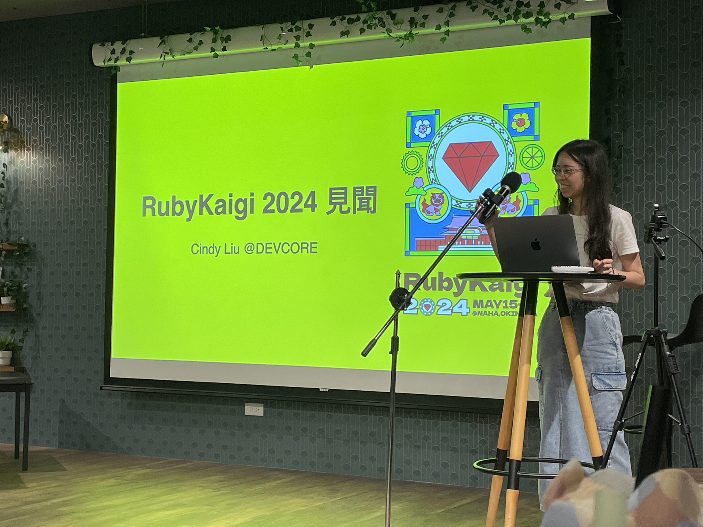

RubyKaigi 2024 心得 & 紀錄

大家好，我是 Cindy，今年第一次參加日本的 RubyKaigi，第一次感覺研討會原來可以有慶典的感覺，覺得是很棒的體驗，所以決定記錄下來 (防止金魚腦的我忘記)，也希望大家看到我的分享也會有興趣有生之年可以體驗看看，這有趣的活動。
我在 Ruby Jam 有分享 RubyKaigi，所以做了簡報想看的人可以下載看看，下面內容也會大部分跟簡報一致，可能多一點簡報放不下的。
目標
參加 RubyKaigi 大家可以自己設定自己的目標，我只是很單純的想要體驗 Ruby 日本社群，可能其他人有其他目標，像是可以見到 Ruby Committer，跟大神們講講話之類的，聽大神們現場講議程，等等，都很棒。
事前攻略
要做的事
確定想去的話看到賣票就先買了因為超早鳥票真的便宜，RubyKaigi 除了官方的活動外，各家的贊助商都會舉辦各自的活動，如果想參加就要在事前多看看哪裡有活動，然後要搶報名的名額囉。
活動網站
- X 搜尋 #rubykaigi
https://x.com/search?q=%23rubykaigi&src=typeahead_click&f=live - connpass 搜尋 rubykaigi + 活動期間
https://connpass.com/search/?q=rubykaigi&start_from=05%2F14%2F2024&start_to=05%2F17%2F2024&sort= - 官網/年份/events
https://rubykaigi.org/2024/events/
在 X 上很多人會分享活動，所以 X 上會是很棒的搜尋站囉，另外跟我一起去的 Kasa 小夥伴還做了 iphone 可以跳出 connpass 有活動的提醒通知小工具，厲害！官網的活動則是會比較晚才有，有些比較早跑的就可能會報不到，但比較晚出現的就沒問題，不只晚上有活動中午也有活動 (不確定是不是因為今年的便當是限量的所以有些贊助商就舉辦了午餐的活動)，另外除了上面列的之外 Doorkeeper 也是有活動的網站，我們有報名到女子晚餐就是從這個網站報名到的囉。
參加的活動
接下來跟大家介紹我有參加的活動
TokyoDev x RailsGirls x WNB.rb: Women and Non-binary Dinner&DrinkUp!
RubyKaigi 前一天晚上的女子晚餐，活動單位舉辦了一些前一天的活動，可以讓第一次參加的朋友在前一天就先認識一些人，真的很貼心，我還在這個晚餐認識了會中文的日本人，覺得好親切啊：）Day0のTokyoDev x RailsGirls x WNB.rb: Women and Non-binary DrinkUp! みんな来てくれて本当にありがとうございます！すごく楽しかった！RubyKaigiの3日、よろしくお願いします！
— mish (@mishmashtan) May 14, 2024
Thank you so much for coming! So happy to see so many making time for this gathering!! Let’s enjoy #RubyKaigi! pic.twitter.com/6uq2g8DMv2STORES CAFE for Women (Day 1)
第一天的女子午餐，中間還讓大家交換位子，不愧是很會辦活動的日本人，覺得尊敬，總是會顧慮到小細節，像是我跟我朋友是外國人，所以讓我們坐一起其他人換位子和我們聊天，雖然最後吃得有點趕，但總體而言是很棒的午餐，認識了日本女工程師外，還認識了 An adventure of Happy Eyeballs 演講的講者，最後還收了主辦給的小禮物：）Yuntaku Night
第一天的晚餐，晚餐好吃，最特別的是沖繩傳統三味線表演，很好玩。表演者還叫大家一起喊 iyasasa (雖然我還問說這是什麼意思，讓大家困擾了一下，真是不好意思)，最後大家還很配合地站起來跳舞，有趣。據說 mybest 說是也有架台灣的網站。#ゆんたくNight お越しの皆様ありがとうございました！たくさんの方にお越しいただけて嬉しかったです！楽しかったですね🙌
— Satoko Iwasa@mybest (@sachii1015) May 15, 2024
明日もお会いできること楽しみにしています〜！！#rubykaigi #rubykaigi2024 #mybest pic.twitter.com/q0ciYs3TbPCode Party RubyKaigi 2024 Day 2
第二天的晚餐，參加了 Code Party，沒有參加過這類的活動我很緊張，活動一開始會讓大家選白板上的主題，然後加入有興趣主題的桌子，跟大家一起討論要做什麼。因為覺得rspecrubocop是我有在用的所以就選了這張桌子，一開始因為不知道要做什麼所以有點尷尬，後來還好有一位提出了他想要解決的問題，主要是想要部分提高 rspec-openapi gem 的輸出，所以我們 8 個人一起討論研究怎麼做，其中還遇到可能是因為測試程式碼內部啟動了一個單獨的進程，無法使用binging.irb或puts方法查看內部，後來有人想到可以用IO.write的方法把我們想查看的資訊寫在檔案裡，然後因為我日文不太好，大家還很用心地跟我說明發生什麼事情，覺得很感人，讓我有很棒的體驗，謝謝大家。コード懇親会/Code Party
— Shuto Tatebayashi / 舘林 秀和 (@shutooike) May 16, 2024
rspec-openapi チーム！#rubykaigi pic.twitter.com/DGCTGG9uaERubyKaigi 2024 After Party
最後一天的晚餐，這次的贊助商是 mov，要先在會場換好飲料券，再換的時候工作人員還說我很快 XD (很前面搶到名額的意思)，活動前還有發解酒液 (真的貼心)，會場讓人很驚艷 (包了兩層樓好幾間餐廳)，基本上是餐廳大家隨便吃，然後要喝飲料或酒再用券去換，其中有些餐廳可以唱歌，所以可以看到大家熱唱的樣子，很好玩：）RubyMusicMixin 2024
最後的夜店活動，也很有趣，也是有飲料或酒券，雖然我是沒待滿待好，但去體驗一下也很不錯：）認識了日本朋友們，很有趣的體驗！Rubyist 很酷！第一次去夜店XD #rubykaigi pic.twitter.com/IILTDJDAPG
— Cindy Liu (@cindyliu923) May 18, 2024
會場
(會場內的詳細圖片直接看簡報惹 (懶得再貼一次的我)，會場佈置的很可愛，設計風格一致)
建議大家可以在前一天 checkin，這樣議程開始的第一天可以不用太早起床。如果不想被拍照的人可以拿 White lanyards，又一個貼心的設計。詳細資訊有列在官網上。不會日文也沒關係，有日翻英的即時翻譯，雖然有點延遲，但整體而言還是ｏｋ的。會場內的下午茶超激烈，因為人很多，所以如果有人群恐懼可能會有點怕 XD 但我還是有拍到一些照片，有吃到一點點水果跟布丁，除了甜的也有鹹的下午茶，但我沒吃到鹹的就是惹。平常時間的話有飲料可以拿，中午則是有限量的便當。想用電腦做自己事情的人還有一個用電腦區域，另外想徵才的話有個白板大家可以貼上自己公司在徵才的廣告，世界地圖區則是大家貼上自己來自哪個國家的環節，我在那邊捕捉到 Matz (Ruby 程式設計語言的主要設計者和實現者) 惹，太幸運惹。
跟 ruby 爸爸的合照！感謝讓我有飯吃！日文聽說突飛猛進中 XD#rubykaigi pic.twitter.com/q5HoLA30mj
— Cindy Liu (@cindyliu923) May 15, 2024
贊助商攤位
我覺得每個攤位都可以感覺得到他們的用心，真的很厲害。
考題類型
這類的攤位每天都會出題目給大家挑戰，很有趣，適合喜歡思考的工程師，也是其中我最喜歡的類型。
- Findy
Findy 的題目，我每天都去做答，三天都答對了超級開心的，主要是考對 Ruby 的熟悉程度，包含版本的變化等等。 - Flatt Security
日本資安公司 Flatt Security 每天都出一題跟 yaml 解析有關的問題，主要是 Ruby 跟各家語言解析後是不同的結果，這可能就是一種不一致吧，我前兩天都答錯了，最扯的是第二天的題目蒼時有跟我說答案我還是答錯不知道在幹嘛，但最後一天有答對就是惹 QQ。 - STORES
在女子會認識的工程師拿到了他們攤位的題目，然後我忘記做題目惹，啥眼。不過回台灣之後我有把它做完，但要拿到 1 分對我來說還是有些困難。
可愛類型
可愛就讚
遊戲互動類型
有貼發票抽獎，或分享抽獎，或幫忙 code review 等等。
My first Ruby Kaigi was an enriching experience for my mind, heart, and hands. Thank you to everyone I met. I'm eager to learn Japanese! #rubykaigi 收穫滿滿 😀 可以感覺到每個人的用心，很棒的活動體驗。 pic.twitter.com/RXozYhWmOJ
— Cindy Liu (@cindyliu923) May 19, 2024
議程
主要列幾場我有聽的議程 & 沒那麼技術的心得 (如果我有寫錯歡迎大家告訴我唷)
Writing Weird Code
記得前一天晚餐就有人跟我說這場演講的講者很有趣，所以很期待，第一天的 keynote 聽完之後真的覺得是很有意思的演講，寫得很奇怪的程式碼跑出各種神奇的動畫。很多人在 X 分享在車站附近看到的動畫，是用 ruby 做的，也是這場議程的講者的作品。從這場演講可以去反思平常沒有想過的問題，奇怪的問題，也許思考這些可以讓我們更理解 ruby。
範例程式碼：https://github.com/tompng/selftrick2024
県庁前のrubykaigiのムービーFULLバージョン pic.twitter.com/FfRCRLVCIJ
— すぎうり (@uproad3) May 14, 2024
Day1のキーノート Writing Weird Code の発表資料です。
— ぺん！ (@tompng) May 20, 2024
My day1 keynote slide #rubykaigihttps://t.co/6rBDPjdX7P
Strings! Interpolation, Optimisation & Bugs
這場演講主要講字串在重新分布記憶體的時候出現的 bug，因為平常也不太會去追純 ruby 的執行過程的細節，所以把指令記下來 ruby --dump=insns test.rb，另外發現有人寫關於這場演講的文章，還蠻清楚的，可以參考。我覺得這個講者最後的結論蠻好的也記下來了：
- Any Changes can have Unexpected impacts
- Always question your assumptions
- Why was the change important?
- What was being achieved?
- How do we verify?
Let’s use LLMs from Ruby 〜 Refine RBS types using LLM 〜
用 AI 產生 ruby 型別定義的方法，其中講者提到因為覺得有趣就去做了，我覺得很棒就記下來了。
#rubykaigi の登壇報告ブログ書きました！ 補足とかも載せてますー。 RubyKaigi 2024 で RBS と LLM の話をしました｜黒曜 https://t.co/3mTX5yH1KC #zenn
— 黒曜@Leaner Technologies (@kokuyouwind) May 21, 2024
Exploring Reline: Enhancing Command Line Usability
介紹 irb 中的 reline，如果大家有覺得 irb 怎麼越來越好用了，可以看看這個演講，其中印象比較深的是 Reline 可以直接編輯 command line 的輸入，以及 undo 的功能。
Exploring Reline: Enhancing Command Line Usability のスライドです。ありがとうございました！ https://t.co/TRQ9ZAHKJW #rubykaigi #rubykaigib
— ima1zumi (@ima1zumi) May 15, 2024
An adventure of Happy Eyeballs
介紹 Ruby socket library 中當 IPV6 和 IPV4 同時存在的時候，IPV6 不能連線 IPV4 可以連線，卻繼續等待 IPV6 連線的問題。這場演講厲害的地方在於講者可以將相對困難的議題，用很簡單的圖片加上說明讓大家了解。
#rubykaigiB にてこの後16:40よりお話しする「An adventure of Happy Eyeballs」の発表資料です。
— Misaki Shioi (しおい) (@coe401_) May 15, 2024
This is a slide from my presentation at RubyKaigi 2024. https://t.co/ACPo6tHI0Z
よろしくお願いします! #rubykaigi
Leveraging Falcon and Rails for Real-Time Interactivity
講者是 ruby async 的作者並創建了 Falcon Web 伺服器，這場演講講了一段互動遊戲發展的歷史，最後也展示了將互動遊戲搬到瀏覽器上讓 Matz 上台玩看看，主要的重點是 server side render 的即時互動遊戲。（感謝蒼時提醒，上次分享沒有說到 server side 的重點）
會眾很厲害的筆記：
#RubyKaigihttps://t.co/cFPhPc1FZ1 pic.twitter.com/ODvhpPeRzP
— りさきゃん🍉 (@_risacan_) May 16, 2024
範例程式碼: https://github.com/socketry/lively
Matz 上台玩遊戲：
Matz playing a Flappy Bird written by @ioquatix in Ruby and running on the server at #RubyKaigi pic.twitter.com/bgiHO3g8iY
— Benoit Daloze (@eregontp) May 16, 2024
最後我記下了覺得有道理的話：
We have made things too complex
Finding Memory Leaks in the Ruby Ecosystem
這是一場雙人的演講，主要是深入研究 ruby 記憶體沒有被釋放的問題，如何在 ruby 中調查這類的問題。我們可以使用 Shopify 提供的套件來做記憶體檢查。
講者提供的 簡報。
Embedding it into Ruby code
主要在講將 ruby type 的裝飾。
Uploaded my slides for #RubyKaigi 2024. https://t.co/nx4YSJKsAG
— Soutaro Matsumoto (@soutaro) May 16, 2024
Reducing Implicit Allocations During Method Calling
Ruby 3.3 和 3.4 star operator 的差別，透過要記憶體位址的邏輯的調整讓 ruby 更有效率。
Slides from my RubyKaigi 2024 talk "Reducing Implicit Allocations During Method Calling" are now available at https://t.co/mWDHHmB28h
— Jeremy Evans (@jeremyevans0) May 16, 2024
RuboCop: LSP and Prism
Rubocop 引入內建的 language server，語言伺服器協定 Language Server Protocol (LSP) 為各種程式語言提供跨編輯器支援的現代標準。其中有提到目前兩大 ruby parser Lrama(LR) 和 Prism(Handcraft)，rubocop 關於 Prism parser 的支援。這場人超多多到滿出來。
作者的文章
I've published "RuboCop: LSP and Prism" slides. Thank you! #rubykaigi #rubykaigiBhttps://t.co/uawerJEgiX
— Koichi ITO (@koic) May 16, 2024
It’s about time to pack Ruby and Ruby scripts in one binary
ギリギリ当日中に資料アップロードした！https://t.co/hzoCmBLkLD#rubykaigi
— ahogappa (@ahogapParty) May 16, 2024
Adding Security to Microcontroller Ruby
スライドこちらです / Slides are here https://t.co/JNmB5euUs9 #rubykaigi #rubykaigiC
— sylph01 (@s01) May 16, 2024
Ruby Committers and the World
這是 RubyKaigi 的慣例，每年會有 Ruby Committer 上台，台上台下一起討論 Ruby 未來相關的議題，很酷的體驗。
- Literal sting will be frozen in the future
印象中有提到為了這項遇到了一些挑戰，但還是會計劃在未來達成。 - Embedded: RBS: WDYT
有讓觀眾投票覺得哪種寫法比較好。 - Replacing Ruby’s build system GNUAutotools → cmake
- Do you want to remove the GVL?
- Improving Ruby’s async usabilty e.g.async…awiat
deferfor Ruby?
「・・・それは Matz のせいでしょ」の瞬間😊#rubykaigi
— emi sugita (@semiemi7) May 17, 2024
熱い議論いいね！👍 pic.twitter.com/mvmaCSxGYG
YJIT Makes Rails 1.7x Faster
Here's my deck for today's #rubykaigi talk: YJIT Makes Rails 1.7x faster https://t.co/Tq1s7wHWf6
— k0kubun (@k0kubun) May 17, 2024
Ruby and the World Record Pi Calculation
本日の発表資料です。来てくださったみなさま、ありがとうございました！ Here's the deck from my RubyKaigi talk today. Thank you y'all for coming today!https://t.co/kA33vC2W2c#rubykaigic
— Emma Haruka Iwao 🏳️🌈🏳️⚧️ (@Yuryu) May 17, 2024
Using Ruby in the browser is wonderful.
用很少的程式碼實現 Ruby in the browser，範例程式碼：https://github.com/ledsun/orbital_ring ，有趣的演講。
Matz Keynote
這次 Matz 講了 4 次的 performance (大家看到都笑惹 XD)，老實說我沒有百分百記得細節，之後可能要再看看影片惹。
- 執行速度
- 提高記憶體效率
- 並行處理的改進
- 提高開發者體驗
總結
最後要感謝跟我一起去的 Kasa 小夥伴，日文比較好的她超厲害，可以跟大家好好的溝通。
也要謝謝 RubyKaigi 的所有工作人員，讓我們有很棒的體驗。
整體而言對我來說是很棒的經驗，體會到 Ruby 沒有死的感覺？大家都超熱情，雖然參加活動又聽演講，整個就是動腦又動心力，每天都蠻累的但是又很充實。很推薦大家都去體驗看看，議程聽不懂其實也沒關係，之後可以再針對有興趣的主題看影片複習，但參加活動認識朋友或是可以近身貼近各界大大，其實是很難得的事情，即便是身為 I 人的我，還是覺得蠻不錯的呢。